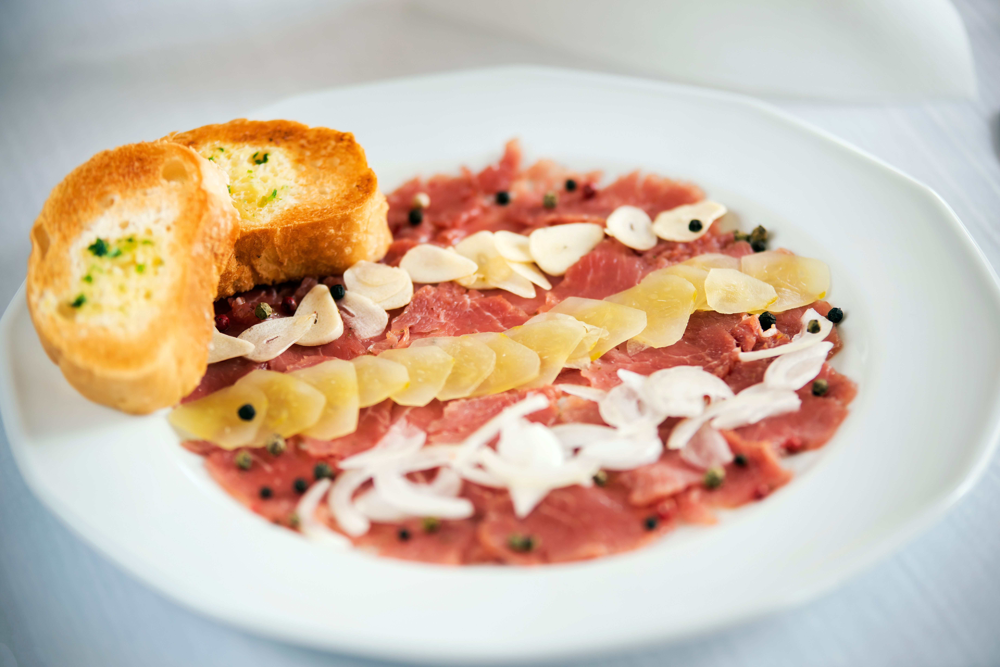

Accueil
Livre des recettes
À propos
CarpacChou
Ce dont vous aurez besoin :
Ingrédients :
Ustenciles :
200 g de bœuf coupé en tranches très fines
30 g de parmesan
1 poignée de roquette
2 c-à-s d’huile d’olive
1/2 citron
Une assiette
Un couteau
Une planche à découper
Une cuillère
Un presse-citron
Préparation en 4 étapes (10 min)
Préparer la viande (3 min) :
disposer les fines tranches de bœuf dans une assiette.
Ajouter les ingrédients (3 min) :
répartir la roquette et les copeaux de parmesan sur la viande.
Assaisonner (2 min) :
verser l’huile d’olive et le jus de citron, puis ajouter le sel et le poivre.
Servir (2 min) :
déguster immédiatement, bien frais.
Ce que vous devriez obtenir :

À vous de jouer !